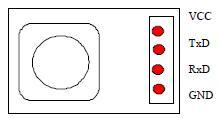

The C328 module is a highly integrated serial camera board that can be attached to a wireless or PDA host performing as a video camera or a JPEG compressed still camera. It provides a serial interface and JPEG compression engine to act as a low cost and low powered camera module for high-resolution serial bus security system or PDA accessory applications.
Model: SEN121A2M
http://www.seeedstudio.com/depot/images/product/c3281.jpg
The warnings and wrong operations possible cause dangerous.
It is the schematic, the circuit about Eagle resource like .pdf should linked here in order to avoid memory exhausted.
VDD = 3.3V+10%, TA = 0 to 25oC
| Symbol | Parameter | Condition | Min | Typ | Max | Unit |
|---|---|---|---|---|---|---|
| VDD | DC supply voltage | 3.0 | 3.3 | 3.6 | V | |
| Io | Normal Operation Current | Operating | 60 | mA | ||
| Is | Suspend Current | Suspend | 100 | uA | ||
| VIH | High level input voltage | TTL | 2.0 | V | ||
| VIL | Low level input voltage | TTL | 0.8 | V |
| Description | Parameter |
|---|---|
| Imager Format | 1/4" |
| F/# | 2.8 |
| Focal length (mm) | 4.63 |
| Field of View Diagonal (deg) | 57 |
| Horizontal (deg) | 42 |
| Vertical (deg) | 16.5 |
| Distortion | |
| Relative Illumination | 67% |
| Filter Option IR-cut filter | included |
| Image | Pin | Description |
|  | VCC | Power 3.3VDC |
| TxD | Data Transmit (3.3V) | |
| RxD | Data Receive (3.3V) | |
| GND | Power Ground |
Camera Sensors
The C328 uses OmniVision OV76xx VGA CameraChips with an 8-bit YCbCr interface.
OV528 Serial Bridge
The OV528 Serial Bridge is a controller chip that can transfer image data from CameraChips to external device. The OV528 takes 8-bit YCbCr 422 progressive video data from an OV76xx CameraChip. The camera interface synchronizes with input video data and performs down-sampling, clamping and windowing functions with desired resolution, as well as color conversion that is requested by the user through serial bus host commands. The JPEG CODEC with variable quality settings can achieve higher compression ratio & better image quality for various image resolutions.
Program Memory
A serial type program memory is built-in for C328, which provides user-friendly commands to interface external control units.
Includes important code snippet. Demo code like :
Demo code { }
The projects and application examples.
All the components used to produce the product.
Please list your question here:
If you have questions or other better design ideas, you can go to our forum or wish to discuss.
| Revision | Descriptions | Release |
|---|---|---|
| v0.9b ? | Initial public release | Jun 08, 2009 |
Bug Tracker is the place you can publish any bugs you think you might have found during use. Please write down what you have to say, your answers will help us improve our products.
The Additional Idea is the place to write your project ideas about this product, or other usages you've found. Or you can write them on Projects page.
Click here to buy: http://www.seeedstudio.com/depot/uart-camera-module-with-jpeg-compression-c328-p-209.html?cPath=144_152.
Other related products and resources.
This documentation is licensed under the Creative Commons Attribution-ShareAlike License 3.0 Source code and libraries are licensed under GPL/LGPL, see source code files for details.
Links to external webpages which provide more application ideas, documents/datasheet or software libraries
Copyright (c) 2008-2016 Seeed Development Limited (www.seeedstudio.com / www.seeed.cc){kind=link}